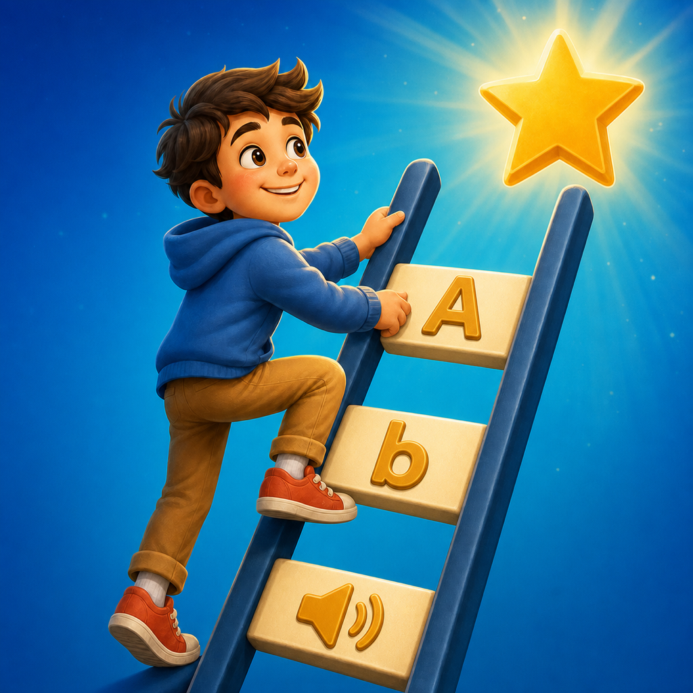

Support center
English Ladder
Help with subscriptions, entitlement restoration, progress across devices, and Game Center achievements.
Monthly subscription and restoration
The monthly subscription unlocks all stages and updates while it remains active. The price, billing period, and renewal terms shown in the app come directly from the App Store for the region of your Apple Account.
To restore, sign in to the Apple Account used for the subscription and select “Restore Purchase.” If there is no active entitlement or previous purchase, the app will say so. You can manage or cancel the subscription in Apple Account settings.
Testing with TestFlight
A TestFlight build lets you test the subscription flow. Apple may display a local price, but the transaction is marked as a test and does not create a real charge.
Progress across devices
Make sure iCloud is enabled and every device uses the same Apple Account. Synchronization can take a short time after opening the game.
Game Center and achievements
Sign in to Game Center in device settings. Achievements are awarded after meeting their in-game requirements, and offline progress may be reported after reconnecting.
Terms and privacy
Review the applicable terms and data practices before subscribing.
Still need help?
Email the game name, device model, system version, and a short description to {{SUPPORT_EMAIL}}. Never send passwords or payment details.